离散优化 Ch_02：图论基础 (Graph Theory)¶
1. 定义与符号 (Definitions and Notation)¶
1.1 有向图与无向图 (Directed and Undirected Graphs)¶
| 类型 | 定义 | 英文原文 |
|---|---|---|
| 无向图 (Undirected Graph) | \(G = (V, E)\)，其中 \(V = \{1, 2, \dots, n\}\) 为 \(n\) 个顶点 (vertices) 或节点 (nodes) 的集合；\(E = \{e_1, e_2, \ldots, e_m\}\) 为 \(m\) 条边 (edges) 的集合，边是非有序对 \(\{i, j\}\)，其中 \(i, j \in V\) | "\(V = \{1, 2, \dots, n\}\): set of \(n\) vertices (or nodes); \(E = \{e_1, e_2, \ldots, e_m\}\): set of \(m\) edges, an edge is a nonordered pair \(\{i, j\}\), where \(i, j \in V\)" |
| 有向图 (Directed Graph) | \(G = (V, A)\)，其中 \(V = \{1, 2, \ldots, n\}\) 为顶点集；\(A = \{a_1, a_2, \ldots, a_m\}\) 为 \(m\) 条弧 (arcs) 的集合，弧是有序对 \((i, j)\)，其中 \(i, j \in V\) | "\(V = \{1, 2, \ldots, n\}\): set of \(n\) vertices (or nodes); \(A = \{a_1, a_2, \ldots, a_m\}\): set of \(m\) arcs, an arc is an ordered pair \((i, j)\), where \(i, j \in V\)" |
- 示例：\(V = \{1, 2, 3, 4, 5, 6 \}\)，\(E = \{\{1, 1 \}, \{1, 2 \}, \{1, 4 \}, \{1, 3 \}, \{2, 4 \}, \{3, 4 \}, \{3, 6 \} \}\)
- 自环 (Loop)：如边 \(\{1,1\}\)
无向图基本术语：
- 边连接 (Links)：边 \(\{i,j\}\) 连接顶点 \(i\) 和 \(j\) —— 这两个顶点称为相邻的 (adjacent)
- 连续边 (Consecutive)：两条边如果共享一个公共顶点则称为连续的
- 原文："Edge \(\{i,j\}\) links \(i\) and \(j\) - the two vertices \(i\) and \(j\) are called adjacent. Two edges are consecutive if they have a vertex in common"
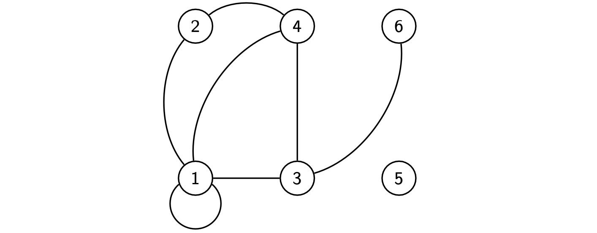
- 示例：\(V = \{1, 2, 3, 4, 5\}\)，\(A = \{(1, 4), (1, 3), (3, 4), (4, 3), (4, 2), (2, 3), (3, 5)\}\)
有向图基本术语：
- 弧的方向：弧 \((i,j)\) 从顶点 \(i\) 出发 (exits) 并进入 (enters) 顶点 \(j\)
- 初始顶点/头 (Initial vertex/Head)：给定弧 \((i,j)\)，顶点 \(i\) 称为初始顶点或头
- 终止顶点/尾 (Final vertex/Tail)：顶点 \(j\) 称为终止顶点或尾
- 端点 (Terminals)：两个顶点都称为弧 \((i,j)\) 的端点
- 后继与前驱 (Successor and Predecessor)：顶点 \(j\) 称为 \(i\) 的后继 (successor)，\(i\) 称为 \(j\) 的前驱 (predecessor)
原文："Given arc \((i,j)\), vertex \(i\) is called initial vertex (or head) and \(j\) is called final vertex (or tail). Both vertices are called terminals of arc \((i,j)\). Vertex \(j\) is also called successor of \(i\) whereas \(i\) is called predecessor of \(j\)"
1.2 赋权图 (Weighted Graphs)¶
- 边/弧赋权：若存在函数 \(c: E \to \mathbb{R}\)（无向图）或 \(c: A \to \mathbb{R}\)（有向图），为每条边或弧关联一个值或权重 (weight)，则称图 \(G\) 是边/弧赋权的
- 顶点赋权：若存在函数 \(w: V \to \mathbb{R}\) 为每个节点关联一个值，则称图 \(G\) 是顶点赋权的
原文："Graph \(G\) is undirected (directed) and weighted on the edges (arcs) if it exists a function \(c: E \to \mathbb{R}\) (\(c: A \to \mathbb{R}\)) that associates a value or weight at each edge (arc). Graph \(G\) is weighted on vertices if it exists a function \(w: V \to \mathbb{R}\) that associates a value (weight) at each node"
1.3 图的割集 (Cutset of a Graph)¶
定义：给定顶点子集 \(S \subseteq V\)，割集 (cutset) 是连接 \(S\) 中顶点与 \(V \setminus S\) 中顶点的所有边的集合。
原文："Given a subset \(S\) of the vertex set, a cutset is the set of all edges joining vertices in \(S\) with vertices in \(V \setminus S\)"
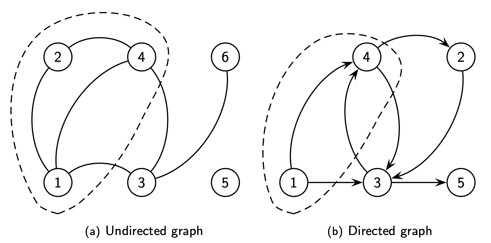
图中用虚线椭圆标示顶点集 \(S\)
无向图的割集公式¶
示例：\(\delta_G(\{1,2,4\}) = \{(1,3),(3,4)\}\)
有向图的割集（区分离去弧与进入弧）¶
对于有向图，需要区分从 \(S\) 离去的弧和进入 \(S\) 的弧：
示例：\(\delta_{G}^{+}(\{1,4\}) = \{(1,3), (4,2), (4,3)\}\) 且 \(\delta_{G}^{-}(\{1,4\}) = \{(3,4)\}\)
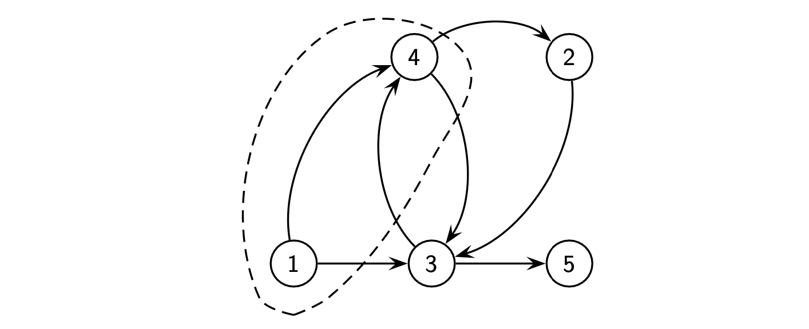
2. 路径 (Paths)¶
2.1 基本定义¶
路径 (Path) 是顶点序列 \(v_{1}, v_{2}, \ldots, v_{k} \in V\)，使得对于每对连续顶点 \((v_{i}, v_{i+1})\)，存在对应的边（无向图）或弧（有向图）。
原文："A path is a sequence of vertices \(v_{1}, v_{2}, \ldots, v_{k} \in V\) such that for each pair of consecutive vertices \((v_{i}, v_{i+1})\) it exists the corresponding edge (undirected graph) or arc (directed graph)"
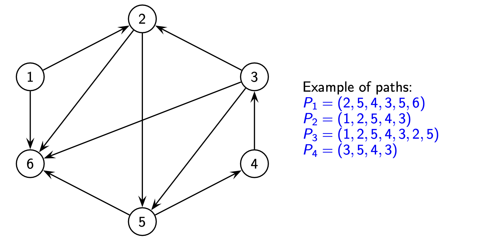
- 路径示例：
- \(P_{1} = (2, 5, 4, 3, 5, 6)\)
- \(P_{2} = (1, 2, 5, 4, 3)\)
- \(P_{3} = (1, 2, 5, 4, 3, 2, 5)\)
- \(P_{4} = (3, 5, 4, 3)\)
2.2 路径的分类¶
| 类型 | 定义 | 判定（基于上述示例） |
|---|---|---|
| 简单路径 (Simple Path) | 不使用同一弧/边超过一次的路径 | \(P_1, P_2, P_4\) 是简单的；\(P_3\) 不是（重复使用了弧 \((2,5)\) 等） |
| 初等路径/基本路径 (Elementary Path) | 不使用同一顶点超过一次的路径 | \(P_2\) 是初等的；\(P_1, P_3, P_4\) 不是（\(P_1\) 重复顶点5，\(P_4\) 重复顶点3等） |
| 非初等路径 (Nonelementary Path) | 使用同一顶点超过一次的路径 | \(P_1, P_3, P_4\) 是非初等的 |
原文：
- "Simple path: does not use the same arc more than once"
- "Elementary path: does not use the same vertex more than once"
- "Nonelementary path: uses the same vertex more than once"
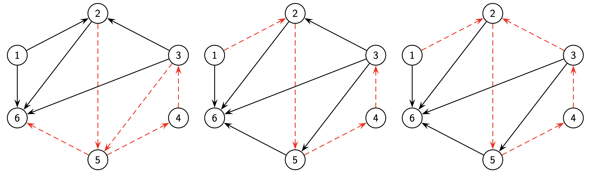
从左到右：简单路径、初等路径、非初等路径；
2.3 特殊路径与路径成本¶
欧拉路径 (Eulerian Path)：遍历图中每条边/弧恰好一次的路径
原文："traverses every link of \(G\) once and only once"
路径长度/成本 (Length/Cost of a Path)： 对于路径 \(P = (v_{1}, v_{2}, v_{3}, \ldots, v_{k})\)： $$ c(P) = \sum_{i=1}^{k-1} c_{v_{i} v_{i+1}} $$ 其中 \(c_{ij}\) 表示弧 \((i, j)\) 的成本。
路径的表示方法：
- 顶点序列：\(P = (v_{1}, v_{2}, v_{3}, \ldots, v_{k})\)
- 弧/边序列：\(P = ((v_{1}, v_{2}), (v_{2}, v_{3}), (v_{3}, v_{4}), \ldots, (v_{k-1}, v_{k}))\)
3. 回路和环 (Circuits and Cycles)¶
3.1 有向图中的回路¶
- 回路 (Circuit)：起点和终点重合的路径
- 原文："a path in which the initial vertex coincides with the final vertex"
- 哈密顿回路 (Hamiltonian Circuit)：经过图中所有顶点的初等回路
- 原文："an elementary circuit which passes through all the vertices of \(G\)"
3.2 无向图中的环¶
- 环 (Cycle)：回路在无向图中的对应概念
- 原文："nondirected counterpart of the circuit"
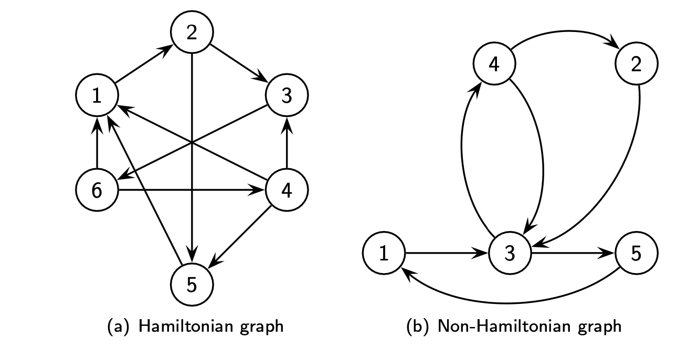
- 示例说明：
- 初等回路 (a): \(C_1 = (1,2,3,6,1)\)
- 初等回路 (b): \(C_2 = (3,4,2,3)\)
- 哈密顿回路 (a): \(C_3 = (1,2,3,6,4,5,1)\)
- 图 (b) 没有哈密顿回路
3.3 部分图与子图¶
| 概念 | 定义 | 英文原文 |
|---|---|---|
| 部分图 (Partial Graph) | \(G' = (V, A')\)，其中 \(A' \subset A\)（保持原顶点集，仅移除部分弧/边） | "graph \(G' = (V, A')\) where \(A' \subset A\)" |
| 子图 (Subgraph) | \(G' = (V', A')\)，其中 \(V' \subseteq V\) 且 \(A' \subseteq A\)（顶点集和弧集都是子集） | "graph \(G' = (V', A')\) where \(V' \subseteq V\) e \(A' \subseteq A\)" |
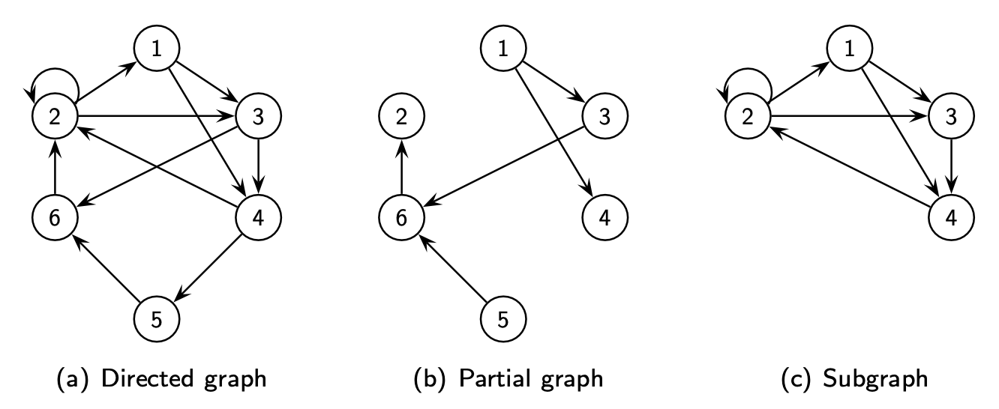
3.4 连通性 (Connection and Components)¶
- 连通图 (Connected Graph)：在对应的无向图中，每对顶点间至少存在一条路径
- 原文："if in the corresponding undirected graph it exists at least one path for each pair of vertices"
- 非连通图 (Disconnected Graph)：存在一对顶点间没有路径相连
- 原文："If for a pair of vertices such a path does not exist, the graph is said to be disconnected"
- 强连通图 (Strongly Connected Graph)：对于任意两个不同顶点 \(i\) 和 \(j\)，至少存在一条从 \(i\) 到 \(j\) 的路径
- 原文："if for any two distinct vertices \(i\) and \(j\) there is at least one path going from \(i\) to \(j\)"
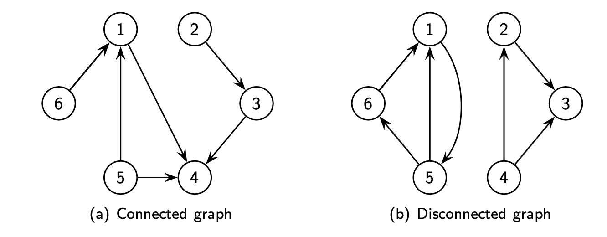
3.5 无环图 (Acyclic Graphs)¶
- 无环图：不含回路（有向图）或环（无向图）的图
- 原文："graph without circuits (cycles)"
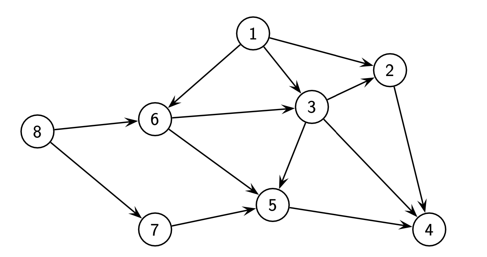
4. 树 (Trees)¶
- 树 (Tree)：无环的连通图
- 原文："a connected graph without a cycle"
- 生成树 (Spanning Tree)：图 \(G\) 的一个部分图，且本身构成一棵树（包含 \(G\) 的所有顶点）
- 原文："a partial graph of \(G\) which forms a tree"
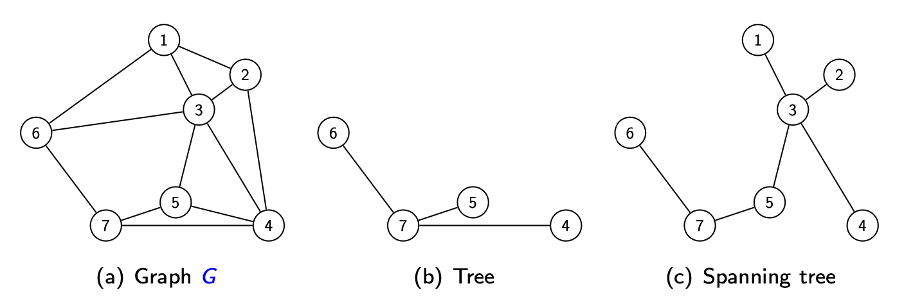
5. 图的表示 (Graph Representation)¶
5.1 附加符号 (Additional Notation)¶
无向图¶
- \(E(S)\)：两个端点都在 \(S \subseteq V\) 中的边集
- \(\Gamma(i)\)：与顶点 \(i\) 关联的顶点集（邻居集合）
有向图¶
- \(A(S)\)：端点都在 \(S \subseteq V\) 中的弧集
- \(\Gamma^{+}(i)\)：\(i\) 的后继集合 (set of successors)
- \(\Gamma^{-}(i)\)：\(i\) 的前驱集合 (set of predecessors)
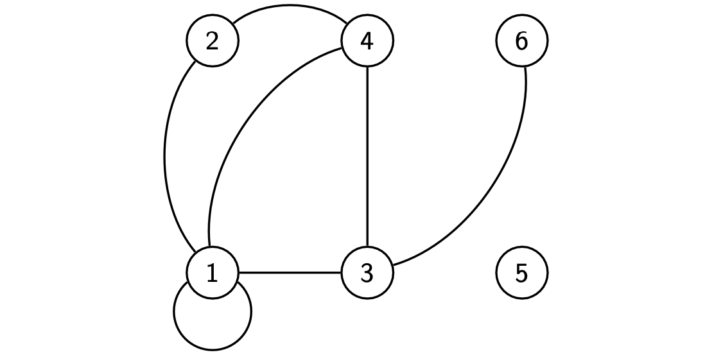
- 示例：\(V = \{1, 2, 3, 4, 5, 6\}\)，\(E = \{\{1, 1\}, \{1, 2\}, \{1, 4\}, \{1, 3\}, \{2, 4\}, \{3, 4\}, \{3, 6\}\}\)
- 计算示例：
- \(E(\{1,2,4\}) = \{\{1,1\}, \{1,2\}, \{1,4\}, \{2,4\}\}\)
- \(\Gamma(2) = \{1, 4\}\), \(\Gamma(4) = \{1, 2, 3\}\), \(\Gamma(5) = \emptyset\)
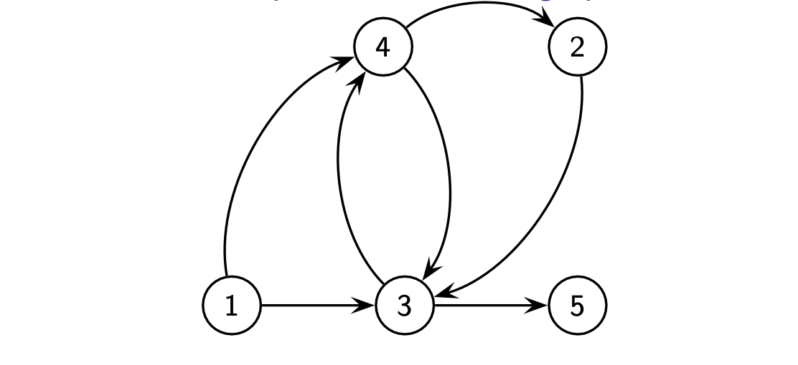
- 示例：\(V = \{1, 2, 3, 4, 5 \}\)，\(A = \{(1, 4), (1, 3), (3, 4), (4, 3), (4, 2), (2, 3), (3, 5) \}\)
- 计算示例：
- \(A(\{1,3,4\}) = \{(1,4),(1,3),(3,4),(4,3)\}\)
- \(\Gamma^{+}(1) = \{3,4\}\), \(\Gamma^{+}(4) = \{2,3\}\), \(\Gamma^{+}(5) = \emptyset\)
- \(\Gamma^{-}(1) = \emptyset\), \(\Gamma^{-}(4) = \{1,3\}\), \(\Gamma^{-}(5) = \{3\}\)
5.2 邻接矩阵 (Adjacent Matrix)¶
无向图的邻接矩阵¶
定义：无向图 \(G = (V, E)\) 的邻接矩阵 \(Q\) 是一个 \(|V| \times |V|\) 矩阵，其元素为：
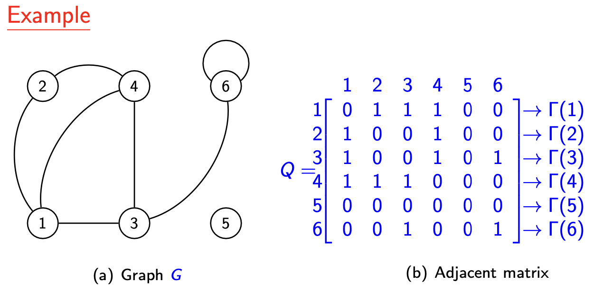
- 矩阵右侧标注了 \(\Gamma(i)\)（邻居集合）
有向图的邻接矩阵¶
定义：有向图 \(G = (V, A)\) 的邻接矩阵 \(Q\) 是一个 \(|V| \times |V|\) 矩阵，其元素为：
5.3 关联矩阵 (Incident Matrix)¶
无向图的关联矩阵（顶点-边）¶
定义：无向图 \(G = (V, E)\) 的顶点-边关联矩阵 \(D\) 是一个 \(|V| \times |E|\) 矩阵，其元素为：
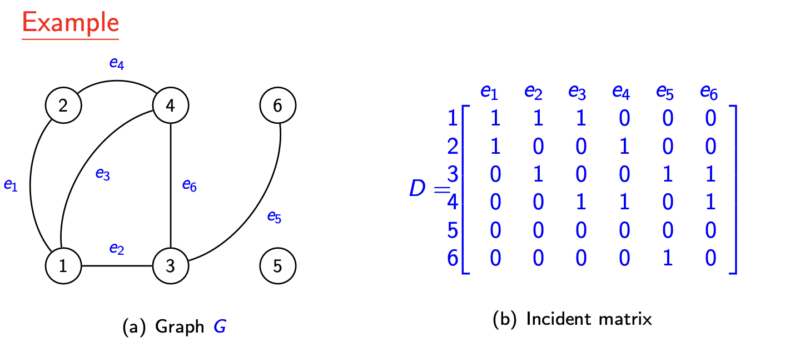
有向图的关联矩阵（顶点-弧）¶
定义：有向图 \(G = (V, A)\) 的顶点-弧关联矩阵 \(D\) 是一个 \(|V| \times |A|\) 矩阵，其元素为：
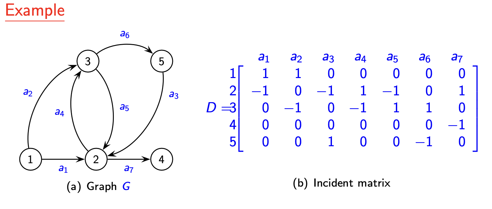
- 注意：矩阵中出弧标记为 \(1\)，入弧标记为 \(-1\)